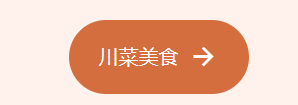

本次web结业作业准备构建一个主题为“川菜”的静态网站，旨在灵活运用html&css的基础上构建一个长页面。
开发软件以及所用文件：vscode,index.html,styles.css,main.js。
css基本配置：网页的基本布局以及字体颜色以及大小等已经提前配置完成，详细请见styles.css。
模块介绍：网页一共有6个内容模块，分别是:"Home","About US","Popular","Recently","Newsletter","footer".
在此模块中，包含四个内容模块，并且通过css对logo图标进行修饰，右上角的图标是网站缩小后可将内容模块进行收纳，点击即可出现，点击X即可退出，具体实现通过main.js实现，其代码如下：
此后的5个内容模块通过"main"和"section"标签进行长网页拼接，以此进行开发
Home模块是网站的主页，为了突出川菜，此处使用"img"标签，用火锅照片覆盖主页，彰显主题。
创建了一个按钮，此按钮是进行跳转效果，通过css修饰过后，得到如下：
about模块进行对川菜各种美食的介绍与描述。
Popular模块以购物车的形式，显示价格与图片，再以"button"标签显示购买状态。
"button"按钮下，为显示客户正在点击查看，在css样式下进行了一个图片抖动效果，即客户鼠标进入此美食图片后，图片会进行抖动。
Recently模块展示川菜的新品，此处开发与Home模块类似，不多赘述。
此模块是一个订阅获取更多更多信息，开发中主要运用"form"与"button"标签，在经过css样式下完成
footer模块为"页脚"部分，此处主要以'li'标签进行开发。
在此模块中，为图标qq和微信增加了抖动效果。
主要遇到的问题有：如何使网页跳转更加顺畅，购物车中如何显示预购买状态，按钮如何显示预点击状态,屏幕缩放问题如何解决。
1.网页跳转更加顺畅：采用CSS 过渡效果和Scroll Up，过渡效果（transition）为页面跳转过程添加平滑的渐变动画，实现更加流畅的页面过渡效果。
2.购物车显示预购买状态：（transform）添加图片抖动效果，即客户鼠标进入此美食购买图后，图片会进行抖动。
3.按钮显示预点击状态：同购物车一样，采用（transform）对图标进行抖动效果
4.屏幕缩放问题：@media screen and (min-width: 1024px)可根据屏幕宽度进行适应性的修改
夜间更换效果未实现，网页样式仍不美观。
此次web开发运用到了诸多html&&css语法，有很多问题是通过视频教学以及网上查阅进行纠正，收获颇多，但针对javascript的学习仍旧浅薄，此次开发 运用javascript语法的也比较少，还需进行深度学习。
这次的web开发让我对前端有了更新的理解，网页如何布局，样式如何更加美观，方法如何运行，都是令人耳目一新的一次教学，加深了我对前端开发的 兴趣，以后一定会更加深入地进行学习。